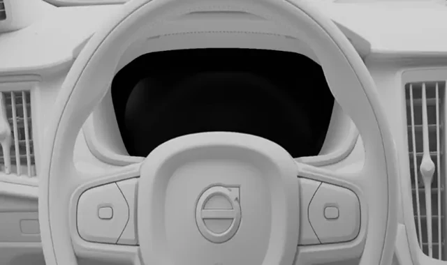

VOLVO XC40 MILD HYBRID (2025)
Πίνακας οργάνων Volvo XC40 (2025)
Διαδραστική εκπαιδευτική δραστηριότητα βασισμένη αυστηρά στο user manual του Volvo XC40 Mild Hybrid 2025. Περιλαμβάνει λυχνίες, προειδοποιήσεις και αξιολόγηση με υποθετικά διαγνωστικά περιστατικά, στο ίδιο πλαίσιο της Ακαδημίας Πινάκων Οργάνων.
Volvo XC40 1st genWarning & indicator symbolsManual pages 50–52Εκπαιδευτική χρήση
Τα σύμβολα προέρχονται από το manual του XC40. Οι τεχνικές περιγραφές είναι εκπαιδευτικές και δεν αντικαθιστούν τη διαδικασία διάγνωσης του κατασκευαστή.

ΟΠΤΙΚΗ ΑΝΑΦΟΡΑ ΠΙΝΑΚΑ ΟΡΓΑΝΩΝ33λυχνίες / ενδείξεις